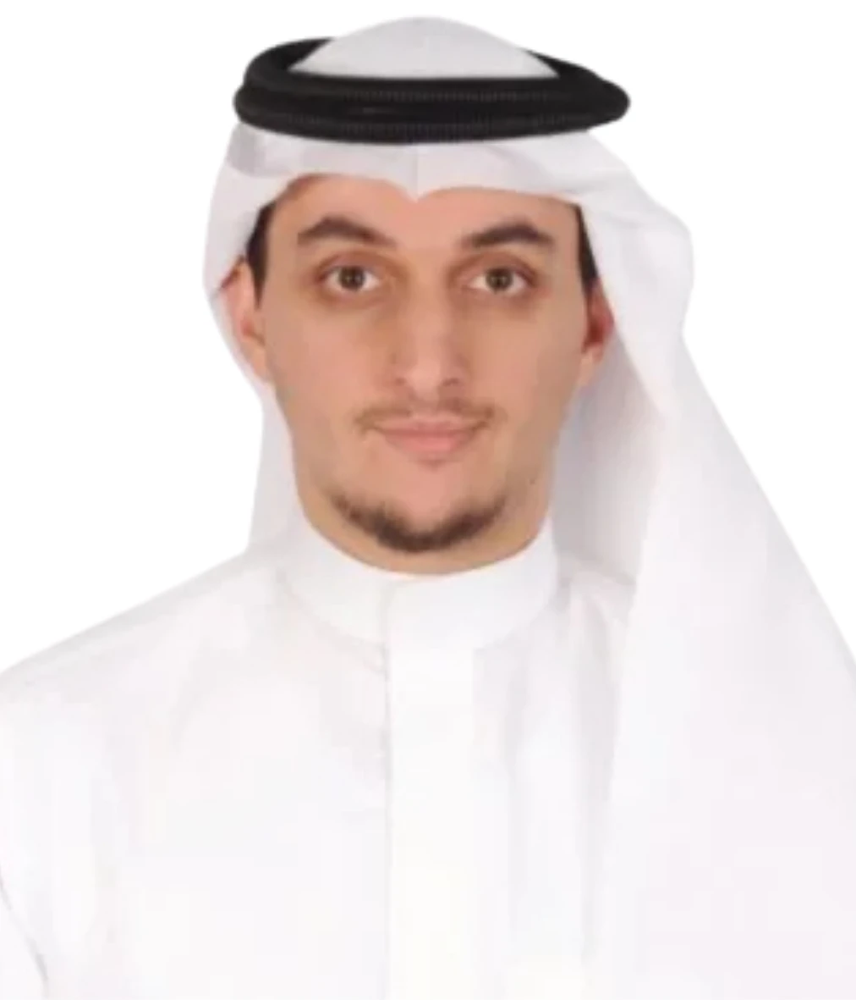
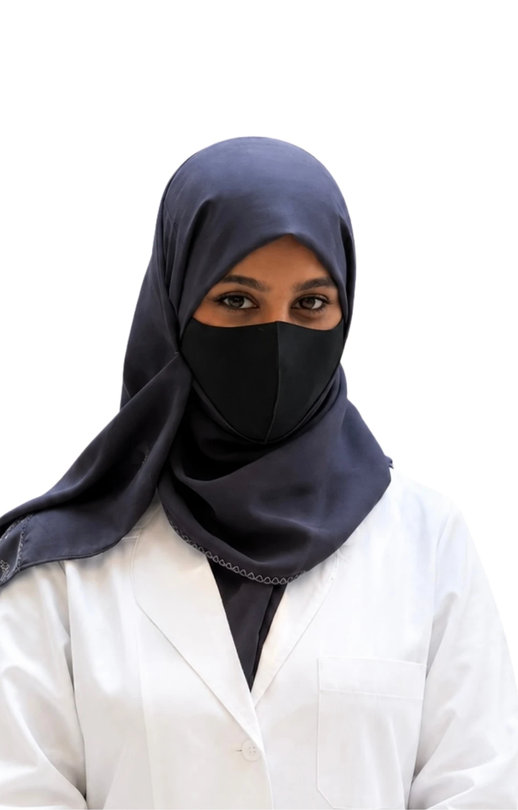
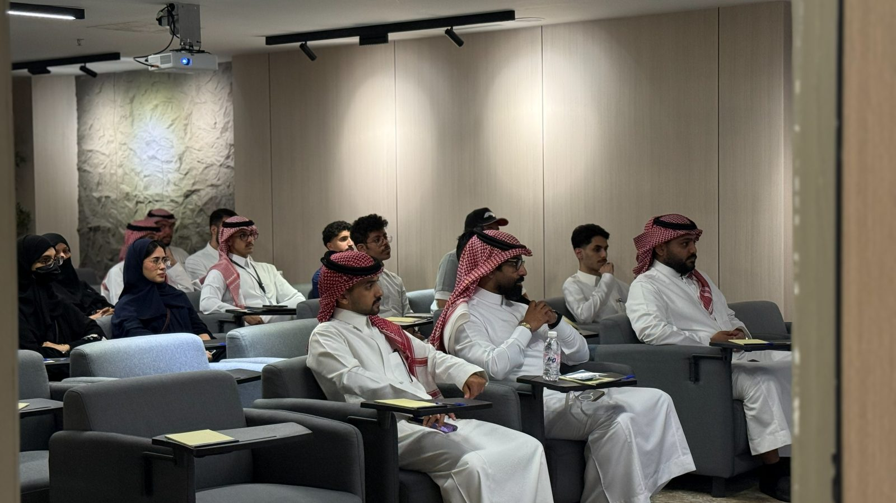
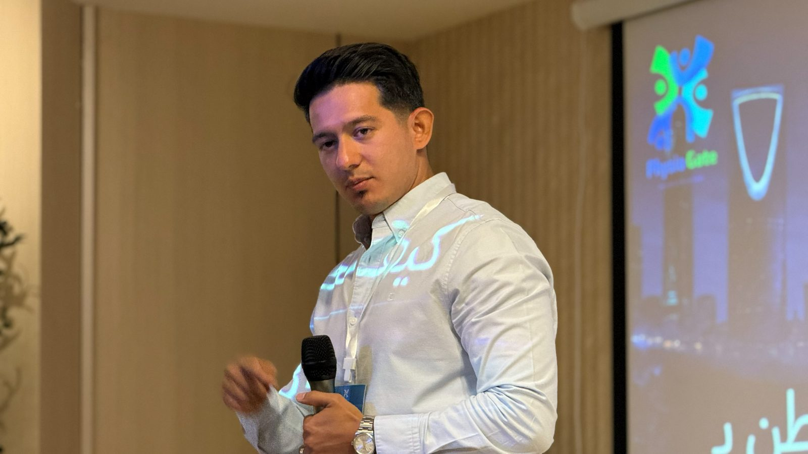
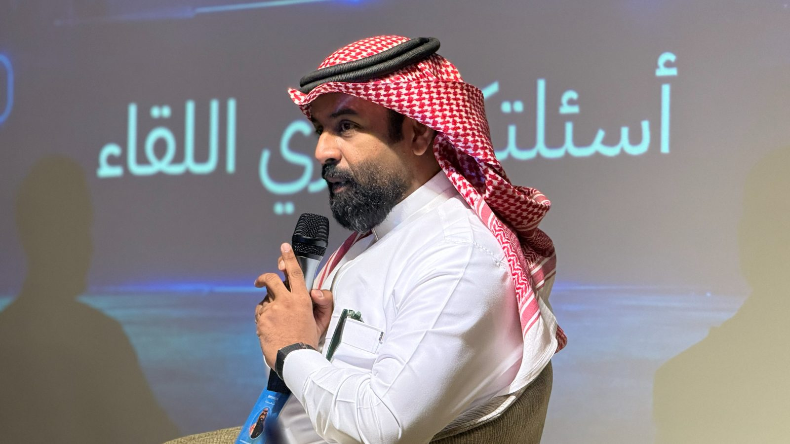
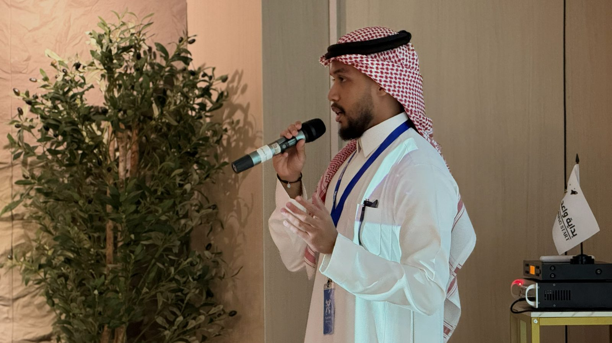
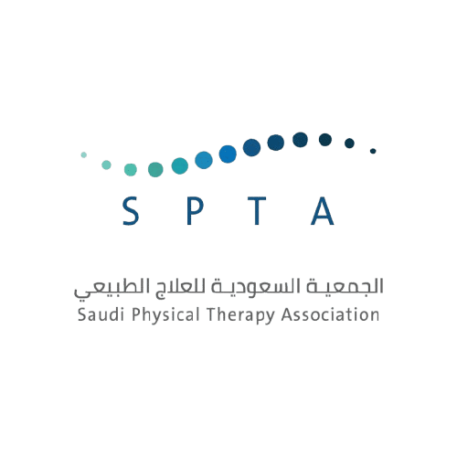
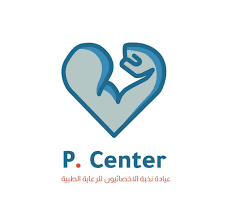
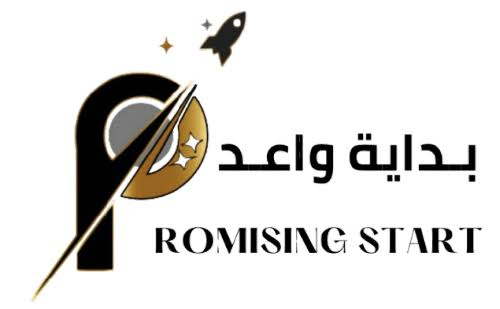

◆
معرفة مشتركة
محتوى علمي ومهني موثوق يصنعه أعضاء المجتمع ويستفيد منه الجميع.
مساحة تلتقي فيها التجارب العلمية والمهنية، وتتحول فيها المعرفة إلى روابط وفرص وأثر ملموس في مجتمع العلاج الطبيعي.
مساحة تلتقي فيها التجارب العلمية والمهنية، وتتحول فيها المعرفة إلى روابط وفرص وأثر ملموس في مجتمع العلاج الطبيعي.
محتوى علمي ومهني موثوق يصنعه أعضاء المجتمع ويستفيد منه الجميع.
شبكة تجمع الطالب بالأخصائي، والباحث بالأكاديمي، في مكان واحد.
فرص وفعاليات وتدريب ميداني ينعكس مباشرة على جودة الممارسة.
أن نكون المجتمع الرائد الذي يجمع جميع فئات العلاج الطبيعي تحت مظلة واحدة، لتمكين المعرفة والتطوير المهني والمساهمة في الارتقاء بجودة خدمات العلاج الطبيعي.
بناء مجتمع للعلاج الطبيعي يهدف إلى تعزيز التواصل الفعّال وتبادل الخبرات والمعرفة بين أفراده، بما يساهم في دعم النمو المهني وتوسيع الآفاق العلمية، بما ينعكس على تطوير المهارات ورفع جودة الممارسة في مجال العلاج الطبيعي والارتقاء به بشكل مستدام.
وجوه تقود مجتمعًا يجمع المعرفة والتجربة والأثر.


لقاءات تجمع المجتمع وتفتح أبواب التعارف المهني.
مبادرات تطوعية تترك أثرًا في المجتمع وتبني الخبرة.
ورش عملية يقدمها مختصون لرفع المهارات السريرية.
تجربة حقيقية داخل بيئة العمل وتحت إشراف مهني.
زيارات للمنشآت الصحية للاطلاع على الممارسة عن قرب.
أربعون عضوًا موزّعين على أربع لجان متخصصة، لكل لجنة دورها في بناء الأثر.
فعالية لشرح دور العلاج الطبيعي في بطولة كأس العالم.




مقالات وأبحاث ومحتوى تعليمي من مجتمع العلاج الطبيعي، قريبًا.
جهات نفخر بالتعاون معها لخدمة مجتمع العلاج الطبيعي.



الإسهام في تطوير القطاع الصحي ورفع جودة الحياة، بما يتماشى مع مستهدفات رؤية السعودية 2030.
كن جزءًا من مجتمع العلاج الطبيعي.